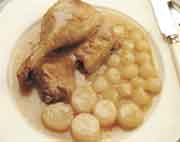

Menú C
PATO CON NABOS

Preparación:
- Se pasa el pato por la llama.
- Se calienta el aceite y tres cucharadas de mantequilla en la cazuela y se fríe el tocino troceado.
- Se añade el pato y se deja, despacito, hasta que se dore por todos los lados.
- Se retira y en su lugar se rehogan las cebollitas, se apartan y se ponen los nabos pelados.
- Se escurren.
- Se añade a la cazuela 20 gr. de harina, se revuelve y se diluye con el caldo y el vino.
- Se reincorpora el pato, se añade una hoja de laurel y un poco de perejil, se salpimenta y se añaden los nabos y cebollitas.
- Se tapa la cazuela y se deja alrededor de una hora, dándole la vuelta de vez en cuando.
- Una vez el pato, se saca y se trincha, se pone en una fuente y se saca a la mesa con los nabos.